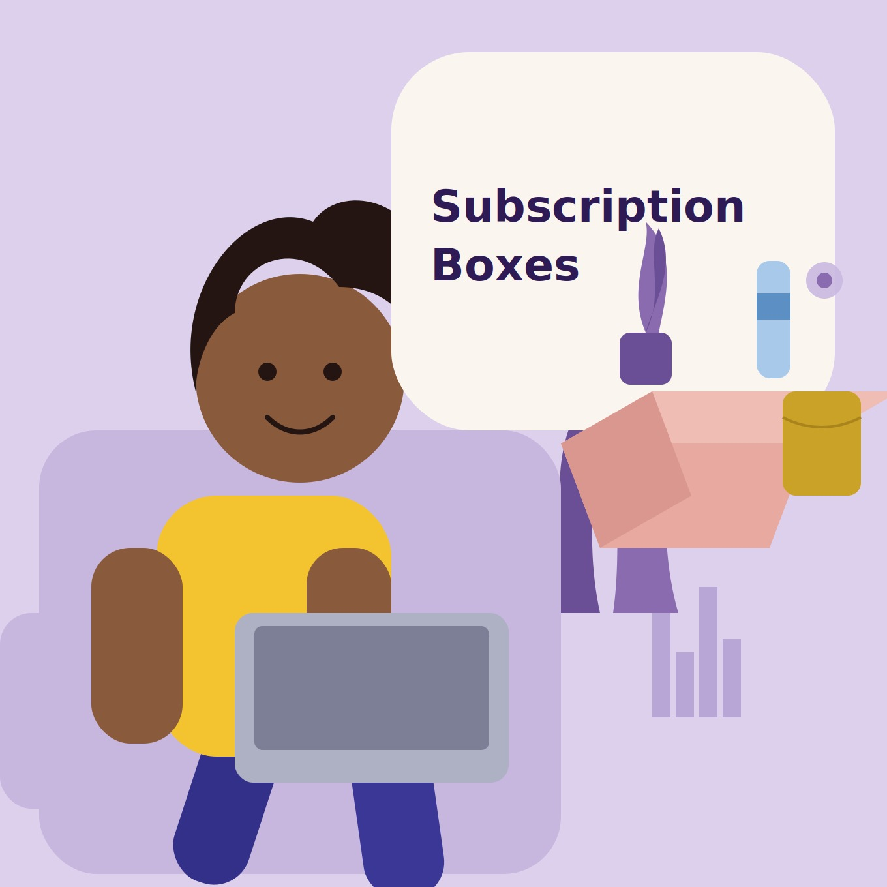

Every business collects data. Few know what to do with it. That gap, between having numbers and having answers, is where I work.
Over eight years across healthcare, engineering, financial services, and corporate environments, I have stepped into fragmented reporting systems, disconnected HR platforms, and revenue leaks nobody had traced yet, and turned each one into a decision leadership could act on with confidence.
I do not just build dashboards. I trace revenue leakage, quantify risk exposure, and flag the assurance gaps other reports miss, then hand leaders the one number that changes what they do next.
A few of the engagements below show this in practice: an eleven query SQL insight library that surfaced a ₦19.7M anomaly, a fintech transformation built from the ground up, an HR modernization case built for board approval. Keep scrolling. There is more.
View my work
A Business Intelligence consulting engagement analysing subscription and transaction data for a digital-first Nigerian commerce business operating across six cities (August 2024 to May 2025).
PostgreSQL + Power BI + DAX + Executive Reporting. A full-stack BI project covering an eleven-query SQL Insight Library, a five-page interactive Power BI dashboard, and a KPI framework built from live transactional data.
Analysed ₦161.46M in confirmed revenue | Identified ₦18.6M in recovery opportunity | Uncovered a ₦19.7M inactive-product anomaly | Delivered 7 executive recommendations.


An end-to-end Business Intelligence project analysing sales performance, operational efficiency, and customer behaviour across a 3-location specialty coffee chain (H1 2023). SQL + Excel + Executive Reporting + Dashboard Design. Explained a 72.3% revenue growth differential | Identified a 30× staffing inefficiency | Classified 29 products by commercial value | Flagged 34.5% revenue concentration risk.
An end-to-end Business Analysis engagement evaluating HR technology modernization for a 75,000-employee global FMCG manufacturer operating across five continents. Stakeholder Analysis + Business Case Development + RACI Governance + SDLC Methodology Selection. A full transformation roadmap covering current vs. future state architecture, a phased implementation plan, and a financially justified case for enterprise HRIS adoption. Projected 25% improvement in HR operational efficiency | Projected $5M in annual savings within three years | Agile SDLC recommendation with full rationale | 6 core BA artifacts + board-ready business case.
A Business Analyst consulting engagement leading project initiation and stakeholder analysis for a mid-size UK digital bank's mobile app revamp. BA Artefacts: Stakeholder Register + Power-Interest Matrix + RACI Governance + Performance Measurement Framework. Tools: Microsoft Excel, Word, PowerPoint. A full discovery-phase engagement covering problem framing, governance design, requirements prioritization, proposed solution, and accountability structures built before solution design began. This engagement demonstrates not just knowledge of Business Analysis techniques — but how to apply them to frame problems, guide decisions, and prepare organizations for delivery. 9-role governance framework | $2M annual revenue exposure addressed | 4 structured solution recommendations | Full RACI + Power-Interest stakeholder mapping.